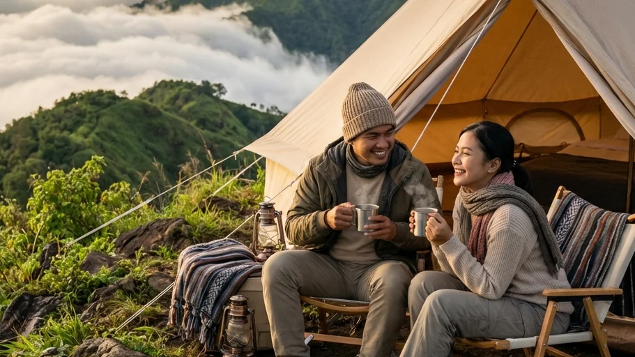

Di tengah padatnya jadwal pekerjaan dan hingar-bingar kehidupan kota yang menyesakkan, kebutuhan untuk melarikan diri sejenak dari rutinitas harian telah berubah dari sekadar keinginan menjadi sebuah kebutuhan medis untuk menjaga kewarasan mental (mental health). Banyak orang yang mencoba mengobati kepenatan ini dengan memesan kamar hotel mewah di tengah kota atau sekadar melakukan staycation singkat. Namun, tembok beton yang dingin dan udara buatan dari pendingin ruangan (AC) seringkali dirasa kurang efektif untuk me-reset kejenuhan jiwa hingga ke akar-akarnya.
Jika Anda mencari pelarian yang mampu menyembuhkan (healing) batin Anda secara mendalam namun tetap bersahabat dengan kondisi finansial Anda, maka pencarian mengenai Rekomendasi Glamping Murah di Puncak untuk Staycation Akhir Pekan yang Berkesan adalah langkah yang paling brilian. Artikel panduan komprehensif ini akan mengupas tuntas mengapa perpaduan antara kemewahan fasilitas glamping dan keliaran alam pegunungan merupakan resep liburan paling sempurna, kriteria apa saja yang harus Anda perhatikan agar tidak tertipu harga murah yang murahan, hingga rekomendasi lokasi terbaik di dataran tinggi Kota Batu Malang yang dijamin akan membuat akhir pekan Anda dan keluarga terasa bagaikan sebuah mimpi yang amat teramat indah.
1. Tren Staycation Alam: Mengapa Glamping Begitu Diminati?
Istilah Glamping merupakan sebuah portmanteau (gabungan kata) dari Glamorous dan Camping. Secara harfiah, glamping bermakna aktivitas berkemah dengan gaya yang glamor, mewah, dan berkelas. Konsep wisata revolusioner ini lahir untuk menjawab rasa dilema masyarakat modern: mereka amat mendambakan kedamaian dan keindahan murni dari alam bebas, namun di sisi lain mereka amat sangat menolak untuk menderita, kedinginan, atau kesulitan mencari fasilitas buang air yang higienis.
Konsep inti dari kegiatan glamping adalah menghapus seluruh elemen "penderitaan" dan keribetan logistik dari aktivitas berkemah tradisional. Anda tidak akan diminta untuk memanggul ransel carrier seberat 20 kilogram, Anda tidak perlu lagi kebingungan merakit kerangka tenda berbahan fiberglass di tengah terpaan hujan gerimis, dan yang paling penting, punggung Anda tidak perlu merasakan kerasnya tanah pegunungan. Glamping menyatukan Anda dengan energi alam yang murni, tanpa memaksa Anda untuk meninggalkan zona nyaman dari gaya hidup masa kini.
2. Mengapa Memilih Glamping di Kawasan Puncak Dataran Tinggi?
Meskipun konsep glamping juga banyak tersedia di area garis pantai berpasir putih, namun melakukan staycation glamping di area dataran tinggi atau kawasan "Puncak" pegunungan menyajikan sensasi relaksasi (healing) yang secara medis dan visual jauh lebih superior.
Menikmati Udara Sejuk Pegunungan yang Menyegarkan
Kawasan dataran tinggi atau puncak (seperti di area Kota Batu Malang) dikenal secara luas dengan tingkat kualitas udaranya yang amat murni dan hawa dinginnya yang menggigit, terutama di kala malam hari menjelang. Dalam aktivitas camping konvensional, hawa dingin ini bisa menjelma menjadi ancaman serius pemicu hipotermia. Namun, dalam ekosistem Glamping Camping, tenda yang digunakan biasanya dirancang menggunakan material kain double layer tebal, kanvas premium, atau membran khusus yang mampu mengisolasi suhu ruangan dengan amat sempurna. Anda bisa menikmati udara segar bebas emisi karbon dari luar, dan kembali masuk ke dalam kehangatan tenda saat tubuh membutuhkan perlindungan.
Pemandangan Spektakuler dari Balkon Tenda
Struktur bangunan glamping atau comfort camp di puncak umumnya didirikan secara strategis menggunakan metode terasering atau diletakkan di atas dek kayu (wooden deck) yang posisinya menghadap lurus ke bibir lembah. Hal ini memberikan Anda sebuah sudut pandang (view) pribadi yang amat eksklusif. Sambil menyesap secangkir kopi hitam panas dari area teras tenda, Anda bisa secara langsung memandangi keajaiban alam seperti lautan kabut pagi yang berarak perlahan, prosesi terbitnya matahari (Golden Sunrise) yang menyilaukan, hingga hamparan jutaan lampu kota (City Lights) yang berkedip di malam hari, tanpa terhalang oleh gedung pencakar langit sedikitpun.
BACA JUGA (Pilihan Liburan Nyaman):
3. Kriteria Memilih Glamping Murah namun Berkualitas Tinggi
Tingginya minat masyarakat terhadap staycation alam melahirkan ratusan operator wisata baru. Agar Anda tidak terjebak pada tawaran "harga murah" yang berujung pada kekecewaan karena fasilitasnya buruk, perhatikanlah dua indikator utama ini dengan saksama:
Harga Transparan dengan Sistem Paket All-In
Banyak pengelola yang memajang harga teramat murah di halaman depan, namun ternyata harga tersebut belum termasuk biaya penyewaan kasur, biaya masuk kendaraan, hingga biaya penggunaan listrik (banyak hidden fee). Pilihlah pengelola glamping yang menerapkan sistem harga paket All-In (terima beres). Artinya, harga yang Anda bayarkan sudah mencakup tenda yang berdiri kokoh, peralatan tidur komplet (matras spons tebal, sleeping bag wangi), akses listrik pribadi di dalam tenda, hingga fasilitas kebersihan yang tak berbayar lagi. Transparansi harga adalah kunci kedamaian pikiran saat liburan.
Kebersihan Toilet dan Fasilitas Air Hangat (Water Heater)
Bagian terlemah dari wisata alam adalah buruknya sarana Mandi Cuci Kakus (MCK). Bagi tamu wanita dan keluarga yang membawa anak balita, kebersihan toilet adalah "harga mati" yang tak bisa dikompromikan. Pilihlah lokasi glamping yang berani menggaransi keberadaan toilet duduk permanen dengan sistem flushing yang higienis. Puncak kemewahan dari sebuah area comfort camp di pegunungan adalah hadirnya fasilitas water heater (pemanas air mandi) bertenaga gas atau listrik. Anda tidak perlu lagi menggigil kedinginan saat harus membersihkan tubuh setelah seharian beraktivitas di alam terbuka.

Berkat evolusi pariwisata yang pesat, tenda-tenda modern di kawasan dataran tinggi kini didesain sedemikian rupa untuk menghadirkan kenyamanan berkelas hotel tanpa memutus interaksi Anda dengan alam terbuka. (Dokumentasi: Batu Sunrise Camp)4. Rekomendasi Glamping Murah di Puncak Malang: Batu Sunrise Camp
Jika Anda mempertanyakan secara spesifik di mana Rekomendasi Glamping Murah di Puncak untuk Staycation Akhir Pekan yang Berkesan yang paling pantas untuk Anda tuju di wilayah Jawa Timur, maka nama Batu Sunrise Camp yang terletak di puncak dataran tinggi Kota Batu adalah permata tersembunyi yang wajib Anda kunjungi.
Fasilitas Setara Glamping dengan Harga Merakyat
Batu Sunrise Camp secara jenius memadukan elemen kemewahan glamping dengan harga yang sangat bersahabat bagi kantong keluarga (konsep Comfort Camping). Di spot perkemahan eksklusif ini, Anda tidak akan disuruh memanggul tas carrier atau menebang kayu. Pengelola telah menyediakan paket All-In VIP di mana tenda berkapasitas besar berspesifikasi anti-badai (double layer tebal) telah berdiri kokoh di atas rerumputan hijau. Di bagian dalamnya, matras spons berketebalan ekstra dan sleeping bag (kantong tidur) berbahan polar yang harum sehabis di-laundry siap menyambut tubuh lelah Anda sekeluarga.
Untuk menyamai standar glamping mewah, pengelola kawasan ini juga telah mengintegrasikan instalasi jaringan colokan listrik (stop kontak) yang sangat aman dari hujan di setiap area kavling, lahan parkir tipe campervan-friendly yang posisinya bersisian langsung dengan letak tenda, serta blok bangunan toilet duduk permanen yang diawasi kebersihannya selama 24 jam penuh.
Bonus Panorama Golden Sunrise dan City Light
Kelebihan absolut dari Batu Sunrise Camp yang tidak dimiliki oleh *resort* mahal di pusat kota adalah orientasi lahan geografisnya. Tenda Anda diarahkan lurus menghadap bibir lembah di sisi timur. Hal ini memberikan Anda dan pasangan sebuah "teater alam" pribadi yang tak ternilai harganya. Saat malam, Anda akan dikelilingi oleh ribuan pijar City Light Malang Raya yang amat romantis. Saat pagi, Anda cukup membuka ritsleting tenda dari kasur untuk menyambut kemunculan sang surya (Golden Sunrise) yang perlahan naik memecah tebalnya awan putih.
5. Persiapan Sederhana Sebelum Berangkat Staycation Glamping
Meskipun sebagian besar beban teknis (seperti tenda dan kasur) telah diambil alih oleh pihak *campground*, Anda tetap harus mempersiapkan barang-barang esensial pribadi agar staycation Anda berjalan tanpa cela.
Membawa Pakaian Hangat (Layering System)
Ingatlah bahwa Anda akan bermalam di kawasan puncak pegunungan. Jangan mengemas celana jeans tipis atau kemeja katun biasa. Bawalah pakaian yang menerapkan sistem 3-Layering: pakaian dasar penyerap keringat (dry-fit), lapisan tengah penghangat tubuh berupa jaket fleece atau rajut tebal, dan cangkang lapisan terluar berupa jaket parasut penahan angin kencang (windbreaker). Pastikan Anda memasukkan kupluk penutup kepala dan sarung tangan tebal, terutama jika Anda membawa anak-anak balita atau orang tua (lansia).
Siapkan Kamera dan Playlist Lagu Favorit
Karena tenda Anda telah difasilitasi dengan sumber listrik yang melimpah, jangan sungkan untuk membawa kamera DSLR atau *mirrorless* terbaik Anda beserta tripod kecil untuk merekam momen sunrise yang spektakuler. Anda juga bisa membawa *speaker bluetooth* portabel kecil. Memutar playlist lagu akustik ber-genre santai di malam hari yang sunyi akan secara magis mendongkrak vibe liburan Anda menjadi berkali-kali lipat lebih syahdu dan romantis.
BACA JUGA (Panduan Persiapan):
6. Aktivitas Seru Saat Staycation Akhir Pekan di Puncak
Tujuan utama dari glamping adalah bersantai, namun jangan biarkan hari berlalu tanpa ukiran kenangan yang manis bersama keluarga.
Barbeque Malam Hari dan Kehangatan Api Unggun
Anda bisa mengucapkan selamat tinggal pada panci masak yang gosong. Siapkanlah bahan mentah seperti irisan daging tipis sapi (beef slice), sosis ayam, bawang bombay, dan alat pemanggang grill pan mini yang dioperasikan dengan gas portabel. Sambil memasak barbeque, Anda bisa ikut bergabung duduk melingkar di area fasilitas alas bakar (fire pit) komunal yang telah disediakan secara aman oleh pihak pengelola. Menatap lidah api unggun yang menari di tengah hawa dingin pegunungan adalah terapi visual alami yang sangat menenangkan jiwa.
Waktu Berkualitas (Quality Time) Tanpa Distraksi
Inilah momen terpenting dari seluruh rangkaian staycation Anda. Lakukanlah digital detox (puasa gawai). Matikan paket data seluler Anda untuk sejenak, jauhkan diri dari tekanan membalas grup pekerjaan kantor, dan alihkan 100% atensi Anda kepada pasangan atau anak-anak yang duduk di sebelah Anda. Lakukanlah deep talk (perbincangan mendalam yang tulus), mainkan permainan kartu keluarga yang sederhana, dan biarkan alam Kota Batu mempererat kembali ikatan batin (*bonding*) keluarga Anda yang mungkin sempat merenggang akibat kesibukan di kota.
7. Kesimpulan
Mengambil keputusan untuk mencoba panduan pada Rekomendasi Glamping Murah di Puncak untuk Staycation Akhir Pekan yang Berkesan ini adalah sebuah langkah yang amat cerdas bagi siapa saja yang mendambakan pelarian dari stres dan kepenatan perkotaan, tanpa harus berkompromi dengan penderitaan dan kelelahan fisik. Liburan jenis ini memadukan secara harmonis antara kemurnian kualitas udara pegunungan, keindahan visual panorama matahari terbit (sunrise), dengan kelembutan kasur alas tidur, kebersihan fasilitas sanitasi, serta kemudahan akses listrik yang tak terputus. Baik Anda adalah sebuah keluarga muda yang baru memiliki anak balita, sepasang kekasih yang tengah mencari romantisme alam, atau kawanan pekerja kantoran yang mencari lokasi healing yang tenang, fasilitas berkelas yang ditawarkan dalam konsep Comfort Camping ala Batu Sunrise Camp akan memastikan bahwa jiwa, raga, dan mood Anda kembali ter-recharge secara utuh. Segeralah atur jadwal cuti terdekat Anda, hubungi layanan reservasi, dan izinkan pesona alam perbukitan Batu memanjakan Anda seutuhnya pada akhir pekan nanti.